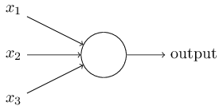

Learning From Examples
“A good stock of examples, as large as possible, is indispensable for a thorough understanding of any concept, and when I want to learn something new, I make it my first job to build one.” - Paul Halmos (Hungarian Mathematician, 1916)
Examinations into the nature of learning tend to be unfruitful or ambigous since many of the mechanisms involved remain hidden in the subconsciousness while the actual knowledge, behaviors, or skills are being acquired for the first time or are being modified and reinforced if already in existence. A useful mode of thought which may assist us in grasping at these hidden processes is an investigation into the minds of children as they learn, especially during their initial acquisition of language. Furthermore, we may gain a clearer insight by compiling a “stock of examples” to consider. An early examination of learning can be found in a passage of ‘The Confessions of St. Augustine’ (400 AD).
“When they (my elders) named some object, and accordingly moved towards something, I saw this and I grasped that the thing was called by the sound they uttered when they meant to point it out. Their intention was shewn by their bodily movements, as it were the natural language of all peoples: the expression of the face, the play of the eyes, the movement of other parts of the body, and the tone of voice which expresses our state of mind in seeking, having, rejecting, or avoiding something. Thus, as I heard words repeatedly used in their proper places in various sentences, I gradually learnt to understand what objects they signified; and after I had trained my mouth to form these signs, I used them to express my own desires.” [1]
From this we recognize early techniques involved in training a learner - that is, presenting an object or entity along with a name or title. Combinations of data with their corresponding name is known as labeled data and the process of training with labeled data is called supervised learning.
Wittgenstein, an Austrian born philosopher of mathematical logic and language, refers to St. Augustine’s passage in his book, ‘Philosophical Investigations’ (1953), stating the following,
“A child uses such primitive forms of language when it learns to talk. Here the teaching of language is not explanation, but training. This ostensive teaching of words can be said to establish an association between the word and the thing. [...] When a child learns this language, it has to learn the series, of ‘numerals’ a, b, c, ... by heart. And it has to learn their use. — Will this training include ostensive teaching of the words? — Well, people will, for example, point to slabs and count: “a, b, c slabs”. — Something more like the ostensive teaching of the words “block”, “pillar”, etc. would be the ostensive teaching of numerals that serve not to count but to refer to groups of objects that can be taken in at a glance. Children do learn the use of the first five or six cardinal numerals in this way.” [2]
Wittgenstein diverges from the notion of ‘ostensive teaching’ (a way of defining by direct demonstration, e.g., by pointing) of basic objects with their associated noun, and begins to examine the teaching and learning of concepts that are implicit, in this case the ordinal numbers associated with a set of objects. This process of discovering reoccurring patterns in data will become known as feature learning and the method of teaching a concept without explicitly presenting labels along with data will be called unsupervised learning.
In Alan Turing’s seminal paper, ‘Computing Machinery and Intelligence’ (1950), the analogy of teaching a child is further developed from a cognitive process into an operational process, and thus into the early stages of a mathematical formal system, where he famously describes what is now known as the “Turing Test” and later the concept of “Learning Machines”.
“In the process of trying to imitate an adult human mind we are bound to think a good deal about the process which has brought it to the state that it is in. [...] Instead of trying to produce a programme to simulate the adult mind, why not rather try to produce one which simulates the child’s? If this were then subjected to an appropriate course of education one would obtain the adult brain. [...] We have thus divided our problem into two parts. The child programme and the education process. These two remain very closely connected. We cannot expect to find a good child machine at the first attempt. One must experiment with teaching one such machine and see how well it learns.” [3]
Here, Turing is no longer merely examining the cognitive processes which occur in a humans mind, but is proposing recreating them in simulation with digital computers. He continues to uncover many of the characteristics which are being discovered in current sophisticated machine learning advancements.
“We normally associate punishments and rewards with the teaching process. Some simple child machines can be constructed or programmed on this sort of principle. The machine has to be so constructed that events which shortly preceded the occurrence of a punishment signal are unlikely to be repeated, whereas a reward signal increased the probability of repetition of the events which led up to it.” [3]
What Turing is describing is now referred to as reinforcement learning. This is where a program navigates through a dynamic environment, which provides feedback in terms of reward and punishment, with the goal of maximizing some cumulative reward.
After examining several examples of inquiries into learning, we are beginning to attain an understanding of the cognitive mechanisms of learning. This process of teaching from a large repository of examples or data is fundamental in teaching machines as well. The transition from our ambiguous cognitive interpretation into a precise operational and mathematical definition is outlined below:
“A computer program is said to learn from experience E with respect to some class of tasks T and performance measure P if its performance at tasks in T, as measured by P, improves with experience E.” [4]
We may now begin formally defining the leaning models used in modern machine learning.
Learning Models and Tasks
Supervised learning
A supervised learning algorithm analyzes labeled training data and produces an inferred function, which can later be used for mapping new examples. An ideal scenario will allow for the algorithm to correctly determine the class labels for unseen instances that it has not been trained on.
Given a set of \(N\) training examples of the form \(\{(x_1, y_1), ..., (x_N,\; y_N)\}\) such that \(x_{i}\) is the feature vector of the \(i\)-th example and \(y_{i}\) is its label, a learning algorithm infers a function \(g: X \to Y\), where \(X\) is the input space and \(Y\) is the output space. The function \(g\) is an element of some space of possible functions \(G\), usually called the hypothesis space.
Some of the fundamental types of task which use supervised learning to train are the following:
Classification
Inputs are divided into multiple classes, and the learning algorithm produces a model that assigns unseen inputs to one or more of these classes. A common example of classification taught to most students is the task of generating a program which can read handwritten digits with high accuracy, typically trained from a large repository of labeled images in the public domain known as MNIST. Two of the main algorithms used to solve general classification problems are Support Vector Machines and Artificial Neural Networks, which will later be examined in more detail. This task is typically approached with supervised algorithms though it is possible to be completed without labelled data where the learner instead aims to infer the classifications from clusters found in the structure of the data.
Regression analysis
In regression, the algorithm attempts to ‘fit’ a function to a set of points and is then able approximate or predict where some new input may map to. This technique is largely inherited from statistics and probability theory, but is very much applicable to problems found in machine learning. To demonstrate this task with a simple example, we could consider plotting a collection of data on a graph where the x-axis is the height of a person and the y-axis is their corresponding weight. Then, if we’re given a new height (x value) as an input value we can make an educated prediction of the possible weight (y value) on the curve. We can also think of the function as mapping to categories instead of real numbers in a similar manner to classification. Common algorithms for Regression analysis are Ordinary Least Squares Regression (OLSR) and Linear Regression.
.5  [fig:test2]
[fig:test2]
.5  [fig:test1]
[fig:test1]
Unsupervised learning
An unsupervised learning algorithm produces an inferred function which describes hidden structure found within a set of unlabeled data. Since the examples given to the learner are unlabeled, there is no objective evaluation of the accuracy of the structure that is output from the algorithm. Moreover, unlike in supervised learning where performance is usually evaluated with respect to the ability to reproduce known knowledge, in unsupervised learning the key task is the discovery of previously unknown knowledge. Some major tasks and algorithms used in this model are the following:
Clustering
This is the task of grouping a set of objects in such a way that objects in the same group (known as a cluster) are more similar to each other than to those in other groups (clusters). Unlike in classification, the groups are not known beforehand, making this an unsupervised task. Systems designed to recommend new items based on a user’s tastes may use clustering algorithms to predict a user’s preferences based on the preferences of other users in the same cluster.
Feature Learning
Also known as Representation Learning, this task aims to learn a feature: the transformation of raw data input into a representation that can later be effectively exploited in machine learning tasks. It is frequently necessary to discover useful features or representations from raw data since traditional hand-crafted features often require expensive human labor, rely on expert knowledge, and normally do not generalize well. In speech recognition, features for recognizing phonemes can include noise ratios, length of sounds, relative power, filter matches and many others. In computer vision, there are a large number of possible features, such as edges and objects.
Reinforcement learning
Reinforcement learning was initially inspired by work in behaviorist psychology studies, in an attempt to examine how software agents should act in an environment to maximize their total reward. Reinforcement learning differs from standard supervised learning in that correct input/output pairs are never presented, nor sub-optimal actions explicitly corrected. Furthermore, there is a focus on finding a balance between exploration of uncharted territory and exploitation of current knowledge. The basic reinforcement learning model consists of:
A set of environment and agent states \(S\).
A set of actions \(A\) of the agent.
Policies of transitioning from states to actions.
Rules that determine the scalar immediate reward of a transition.
Rules that describe what the agent observes.
A reinforcement learning agent interacts with its environment in discrete time steps. At each time \(t\), the agent receives an observation \(o_{t}\), which often includes the reward \(r_{t}\). It will then choose an action \(a_{t}\) from the set of possible actions \(A\), which is then sent to the environment. The environment moves to a new state \(s_{t+1}\) and the reward \(r_{t+1}\) associated with the transition $ (s_{t},a_{t},s_{t+1})$ is determined. The goal of a reinforcement learning agent is to collect as much reward as possible. The agent can choose any action as a function of the history and it may even randomize its action selection.
Shift to Probability Theory
The initial approach to training machines was to create a logical system where a hypothesis was derived from logic theories that were programmed into the machine. Given an encoding of the known background knowledge and a set of examples represented as a logical database of facts, an Inductive Logic Programming system will derive a hypothesized logic program that entails all positive and no negative examples. Though useful in processing formal systems, like in parsing natural language structures, this approach of imitating actual human intelligence and tasks grows increasingly ineffective as decision-making processes and hierarchical thinking becomes more complexly structured.
Inductive Logic Programming appeared to be the best approach at the time since both the computer science field and artificial intelligence sub-field were founded on Boolean and symbolic logic. To add to this, the hardware in the mid-to-late 1900s could not handle processing the extremely large data sets required to get desirable levels of performance. However, more recently we have abandoned this approach for statistical methods which involve deriving a hypothesis from patterns found in large repositories of data, which is likely more similar to our own neural processes.
This shift from logical inference to statistical inference and the shift from Boolean logic and discrete values to probability theory and floating point values has proven to be a very important change in computation and modern applications, most notably in a programs ability to perform tasks which include and exceed human capabilities. The following algorithm which will be examined in more detail combines these sophisticated statistical methods for data analysis along with ingenious data structures inherited from computer science. Even more interesting, these models were inspired by and appear to accurately imitate the structure and function of synapses and biological neural networks.
Perceptrons and Artificial Neural Networks
Perceptrons were developed in the 1950s and 1960s by the scientist Frank Rosenblatt [5]. A perceptron neuron takes several binary inputs, \(x_1, x_2, \dots,\) and produces a single binary output. Rosenblatt proposed a simple rule to compute the output by introducing weights, \(w_1, w_2, \dots,\) real numbers expressing the importance of the respective inputs to the output. The neuron’s output, \(0\) or \(1\), is then determined by whether the weighted sum \(\sum_j w_j x_j\) is less than or greater than some threshold value. Similar to the weights, the threshold is a real number which is a parameter of the neuron.
\[\begin{aligned}
\mbox{output} & = & \left\{ \begin{array}{ll}
0 & \mbox{if } \sum_j w_j x_j \leq \mbox{ threshold} \\
1 & \mbox{if } \sum_j w_j x_j > \mbox{ threshold}
\end{array} \right.\end{aligned}\]
This notation is usually expressed as the dot product \(w \cdot x \equiv \sum_j w_j x_j\) where \(w\) and \(x\) are the vectors corresponding to the weights and inputs respectively. Additionally, the threshold is moved to the other side of the inequality and referred to as the perceptron’s bias, \(b \equiv -\mbox{threshold}\). Introducing the bias will later lead to further notational simplifications.
\[\begin{aligned}
\mbox{output} = \left\{
\begin{array}{ll}
0 & \mbox{if } w\cdot x + b \leq 0 \\
1 & \mbox{if } w\cdot x + b > 0
\end{array}
\right.\end{aligned}\]
.5  [fig:test1]
.5 [fig:test2]
In a neural network of connected perceptron neurons, the latter layers of neurons can make a decisions at a more complex and more abstract level than perceptrons in the preceding layers. In this way, a many-layered network of perceptrons can engage in sophisticated decision making.
Despite the perceptrons being described as a method for weighing evidence used to make decisions, they may also be used to compute the elementary logical functions AND, OR, and NAND used in underlying computations. An implementation of NAND (the negation of AND) has important implication. The NAND gate is known as universal for computation - this means that we can use networks of perceptrons to compute any logical function and thus preform any and all possible computations.
The desired behaviour of a network of neurons would be for a small change in weight to cause only a small corresponding change in the output of the network. However a small change in the weights or bias of any single perceptron in a given network may cause the output of that perceptron to completely flip, say from \(0\) to \(1\). That flip may then cause the behaviour of the rest of the network to change in some very complicated way. We may overcome this issue by introducing a new type of artificial neuron called a sigmoid neuron. Sigmoid neurons are similar to perceptrons, but modified so that small changes in their weights and bias cause only a small change in their output. This crucial change will allow a network of sigmoid neurons to learn.
Just like a perceptron, the sigmoid neuron has inputs, \(x_1,x_2, \dots\) But instead of being a binary value \(0\) or \(1\), these inputs can also take on any decimal values between \(0\) and \(1\). Correspondingly, the output is instead the real value output of a function \(\sigma(w\cdotx+b)\), where \(\sigma\) is called the sigmoid function,
\[\begin{aligned}
\sigma(z) \equiv \frac{1}{1+e^{-z}}.\end{aligned}\]
More explicitly, the output of a sigmoid neuron can be calculated with the following, \[\begin{aligned}
\frac{1}{1+\exp(-\sum_j w_j x_j-b)}.\end{aligned}\]
The behaviour of a sigmoid neuron closely approximates a perceptron, that is: when \(z = w \cdot x + b\) is large and positive the output from the sigmoid neuron is approximately 1, and when \(z = w \cdot x + b\) is very negative the output is approximately 0. It is only when \(w \cdot x+b\) is of medium size that there is a deviation from the perceptron model.
It is necessary to have an algorithm which lets us find weights and biases such that the output from the network approximates \(y(x)\), the inferred function, for all training inputs \(x\). To quantify our success in achieving this goal we may define a cost function,
\[\begin{aligned}
C(w,b) \equiv
\frac{1}{2n} \sum_x \| y(x) - a\|^2.\end{aligned}\]
Here, \(w\) denotes the collection of all weights in the network, \(b\) all the biases, \(n\) is the total number of training inputs, \(a\) is the vector of outputs from the network when \(x\) is input, and the sum is over all training inputs, \(x\). \(C\) is known as the quadratic cost function and also referred to as the mean squared error.
The aim of the training algorithm will be to minimize the cost \(C(w,b)\) as a function of the weights and biases. This occurs when \(y(x)\), is approximately equal to the output and can be achieved by using an algorithm known as gradient descent, taken from multivariable calculus, to find where \(C\) achieves its global minimum. This will prove to be very difficult when there are many variables, which is typical in neural networks where there may be billions of weights and biases.
Suppose that \(C\) is a function of \(m\) variables, \(v_1,\dots,v_m\). Then the change \(\Delta C\) in \(C\) produced by a small change \(\Delta v=(\Delta v_1,\dots,\Delta v_m)^T\) is
\[\begin{aligned}
\Delta C \approx \nabla C \cdot \Delta v,\end{aligned}\]
and where the gradient \(\nabla C\) is the vector,
\[\begin{aligned}
\nabla C \equiv \left(\frac{\partial C}{\partial v_1}, \ldots,
\frac{\partial C}{\partial v_m}\right)^T.\end{aligned}\]
Then suppose we choose \[\begin{aligned}
\Delta v = -\eta \nabla C,\end{aligned}\]
where \(\eta\) is a small, positive parameter known as the learning rate. Then Equation (6) tells us that \(\Delta C \approx -\eta \nabla C \cdot \nabla C = -\eta \|\nabla C\|^2\). Since \(\| \nabla C \|^2 \geq 0\), this guarantees that \(\Delta C \leq 0\), i.e., \(C\) will always decrease toward the global minimum.
The gradient descent algorithm will repeatedly compute the gradient \(\nabla C\), and then move in the opposite direction. The goal is to use an update rule to find the weights \(w_k\) and biases \(b_l\) which minimize the cost in Equation (5). The update rules can be defined as
\[\begin{aligned}
w_k & \rightarrow & w_k' = w_k-\eta \frac{\partial C}{\partial w_k} \\
b_l & \rightarrow & b_l' = b_l-\eta \frac{\partial C}{\partial b_l}.\end{aligned}\]
The neural networks being examined thus far have had the property in which the output from one layer is used as input to the next layer and there are no loops in the network. These networks are called feedforward neural networks. However, there are other models of artificial neural networks called recurrent neural networks in which feedback loops are possible. The function of these models is to have neurons which fire for some limited duration of time before becoming quiescent. This firing can then stimulate other neurons, which may fire some time later for a limited duration, essentially causing a cascade of neurons firing.
Applications
A few of the popular modern applications of machine learning are presented for the reader to examine in more depth on their own time.
Conclusion
A good deal about the history, theory, and popular algorithms involved in machine learning has been examined, yet there still remains substantially more that has not been investigated. Regardless, this paper has hopefully served as a general introduction into the field and, more importantly, has piqued an interest in what may prove to be one of the most influential technologies in human history.
9 Saint Augustine of Hippo (1961). Confessions. Harmonds worth Middlesex, England: Penguin Books.
Wittgenstein, L. (1953) Philosophical Investigations, G.E.M. Anscombe and R. Rhees (eds.), Oxford: Blackwell.
Turing, A. (October 1950), Computing Machinery and Intelligence, Mind, LIX (236): 433-460
Mitchell, T. (1997). Machine Learning. McGraw Hill.
Rosenblatt, F. (1958). The Perceptron: A Probabilistic Model For Information Storage And Organization In The Brain. Psychological Review.